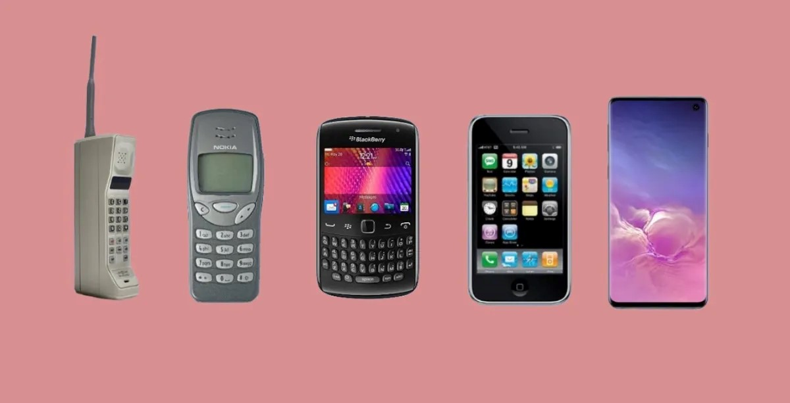
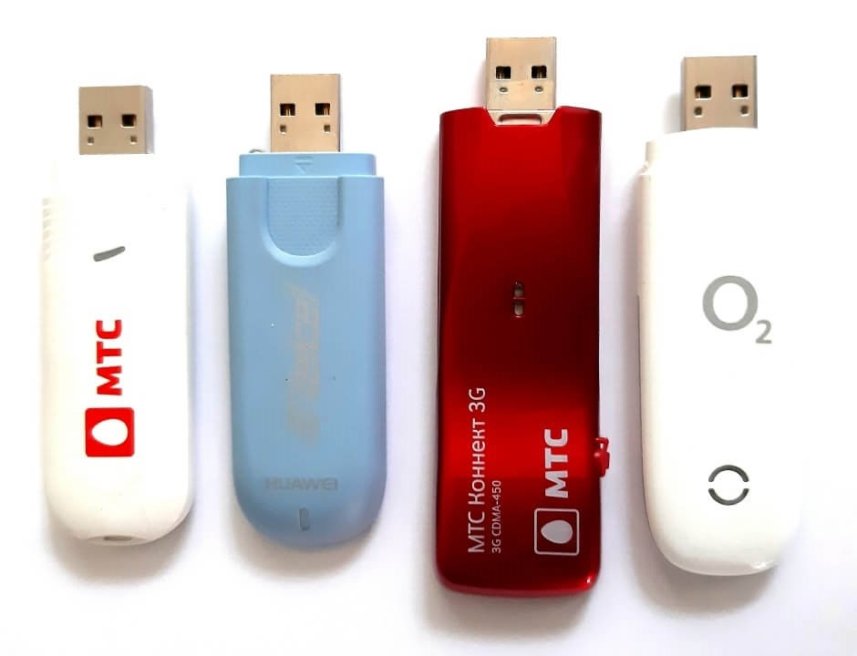

Telefonía fija
Esta sección es un extracto de Teléfono.
Antiguo teléfono público de fichas de la década de los años 1960
El teléfono es un dispositivo de telecomunicación creado para transmitir señales acústicas a distancia por medio de señales eléctricas. Fue inventado por el italiano Antonio Meucci, quien en 1854 construyó su primer prototipo, aunque no formalizó su patente por dificultades económicas, presentando solo una breve descripción de su invento en la Oficina de Patentes de Estados Unidos el año de 1871.
Años después, en 1876, el escocés Alexander Graham Bell fue el primero en patentarlo formalmente, y durante muchos años, junto a Elisha Gray, fueron considerados los inventores del teléfono.
El 11 de junio de 2002, el Congreso de los Estados Unidos de América aprobó la resolución 269, en la que se reconoce que el verdadero inventor del teléfono fue Antonio Meucci, que lo llamó teletrófono.
Telefonía móvil
Esta sección es un extracto de Telefonía móvil.
Antena de telefonía móvil.La telefonía móvil, servicio móvil o telefonía celular11 es un medio de telecomunicación, más concretamente de radiocomunicación, por teléfono móvil o celular. Este medio de comunicación se generalizó a finales de los años noventa. La tecnología asociada se beneficia de las mejoras en los componentes electrónicos, especialmente su miniaturización, que permite a los teléfonos adquirir funciones antes reservadas a las computadoras.
Banda ancha
Esta sección es un extracto de Banda ancha.
En telecomunicaciones, se conoce como banda ancha a cualquier tipo de red con elevada capacidad para transportar información que incide en la velocidad de transmisión de esta.14 Así entonces, es la transmisión de datos simétricos por la cual se envían simultáneamente varias piezas de información, con el objeto de incrementar la velocidad de transmisión efectiva. En ingeniería de red de computadoras este término se utiliza también para los métodos en donde dos o más señales comparten un medio de transmisión. Así se utilizan dos o más canales de datos simultáneos en una única conexión, lo que se denomina multiplexación (ver sección más abajo).
Algunas de las variantes de los servicios de fibra hasta la casa (Fiber To The Home) son de banda ancha. Los routers que operan con velocidades mayores a 100 Mbps también son banda ancha, pues obtienen velocidades de transmisión simétricas.
El concepto de banda ancha ha evolucionado con los años. La velocidad que proporcionaba la RDSI con 128 Kbps dio paso al SDSL con una velocidad de 256 Kbps. Posteriormente evolucionó, pasando los 25 y 50 Mbps simétricos hasta los 600 Mbps en la actualidad.
Esta sección es un extracto de Banda ancha móvil.
Con tecnología 4G LTE (actualmente de mayor velocidad de datos).
La Banda Ancha Móvil (BAM), también conocida como ADSM (por ADSL móvil),16 es un servicio de Internet Móvil con banda ancha.
Esta tecnología permite obtener internet en cualquier lugar y momento, siempre que se disponga de cobertura móvil, y puede ofrecer velocidades equiparables a las velocidades de banda ancha por cable (entre 3 y 42 Mbps dependiendo del operador y del tipo de conexión: GPRS, 3G, 4G).......................................
Redes de televisión
Móvil de una TV japonesa.
Actualmente hay cuatro tecnologías para la distribución de contenidos de televisión, incluyendo las versiones analógicas y las digitales:
•La televisión terrestre, que es el método tradicional de transmitir la señal de difusión de televisión, en forma de ondas de radio transmitida por el espacio abierto. Este apartado incluiría la TDT.
•La televisión por satélite, consistente en retransmitir desde un satélite de comunicaciones una señal de televisión emitida desde un punto de la Tierra, de forma que esta pueda llegar a otras partes del planeta.
•La televisión por cable, en la que se transmiten señales de radiofrecuencia a través de fibras ópticas o cables coaxiales.
•La televisión por Internet traduce los contenidos en un formato que puede ser transportado por redes IP, por eso también es conocida como Televisión IP.....................